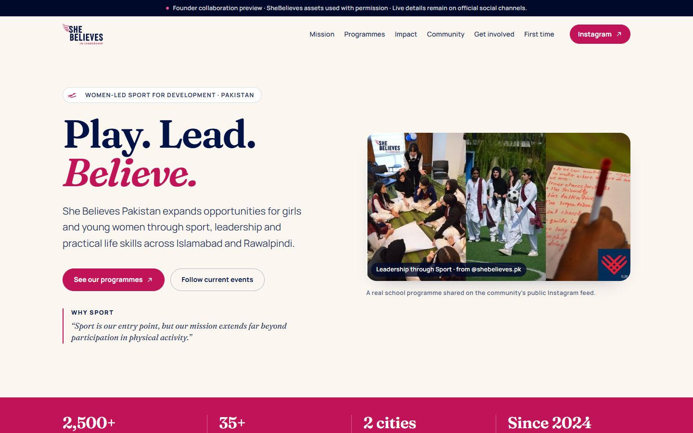
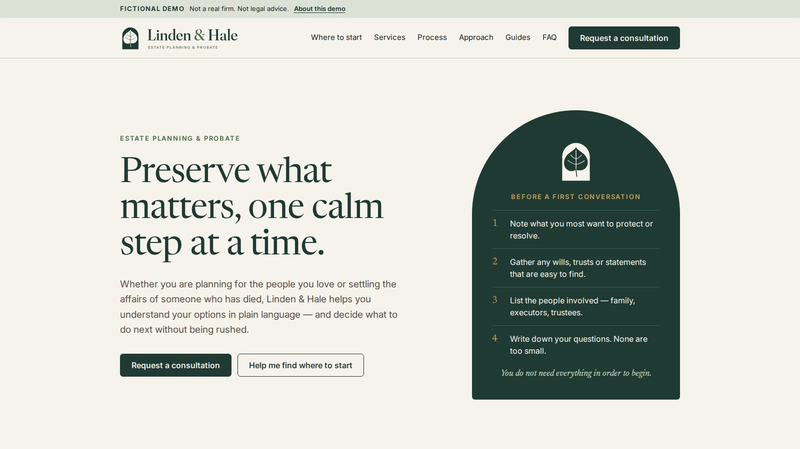
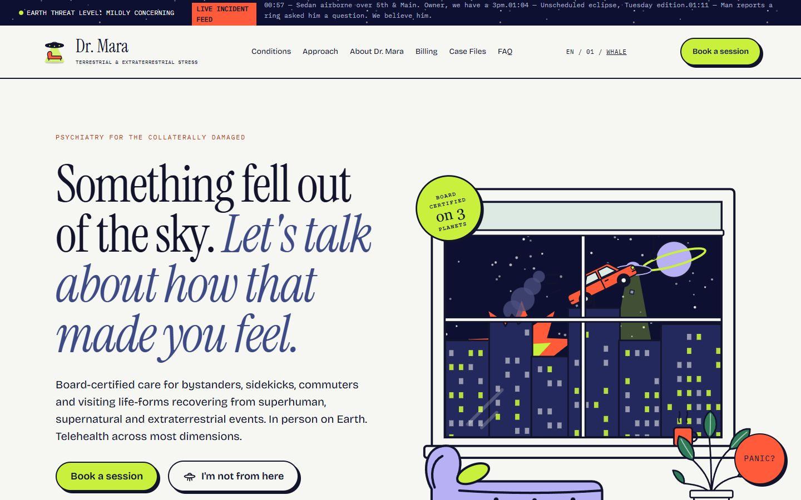
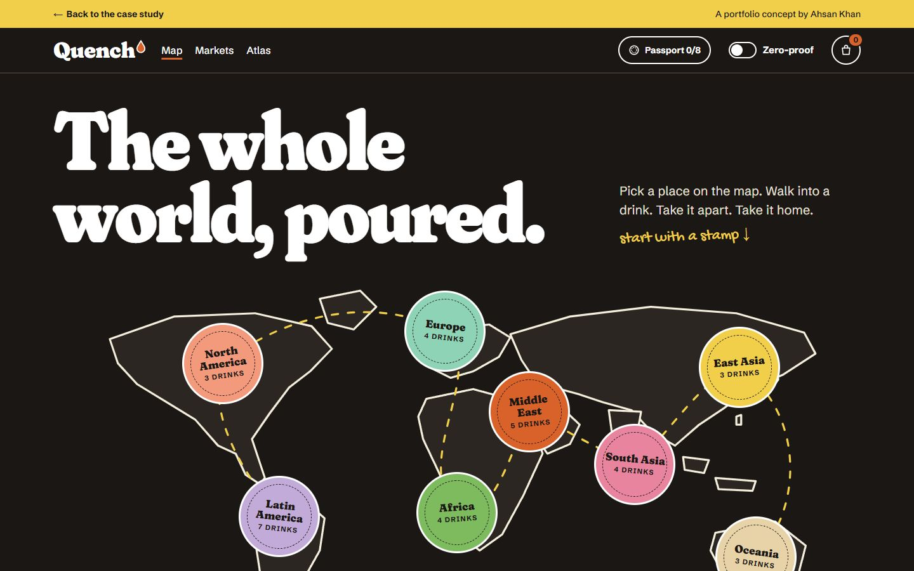
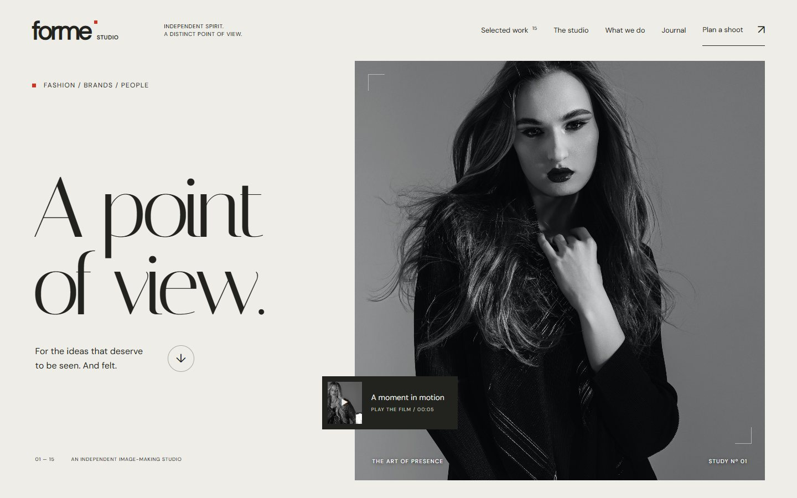

Make the next step clear.
A worked example of turning a vague service introduction into copy a reader can use.
Live: this card runs the edit from the case study
Selected work
Explore the problem, the choices and the result. Each project tells you what I contributed.
A worked example of turning a vague service introduction into copy a reader can use.
Live: this card runs the edit from the case study

A single-page website for SheBelieves Pakistan, bringing its programmes and participation paths together.
Live site
Linden & Hale: a brand-led estate-planning site with two paths, life-moment guidance and a printable meeting pack.
Live site
Dr. Mara: a deadpan psychiatry website for the bystanders of impossible events, built as a working browser experience.
Live site
Quench: an encyclopedia of the world’s drinks that is also a shop, with drink rooms you can take apart and a map to travel by.
Live site
FORME: a website for a fictional photography studio, built so the pictures lead and the next shoot is easy to start.
Live siteEssays on writing, editing and the pages they live on. See all writing
Latest article
Clear writing is harder because it has to decide what matters, what comes first and what can safely go.
Read the article →Elsewhere
Pieces published on other platforms will be linked here as they go live.
Follow on LinkedIn ↗Samples on request
Ask for writing samples that match your topic, audience and format.
Ask for samples